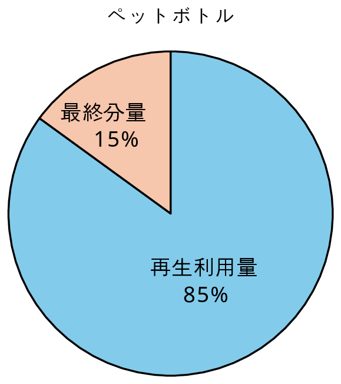
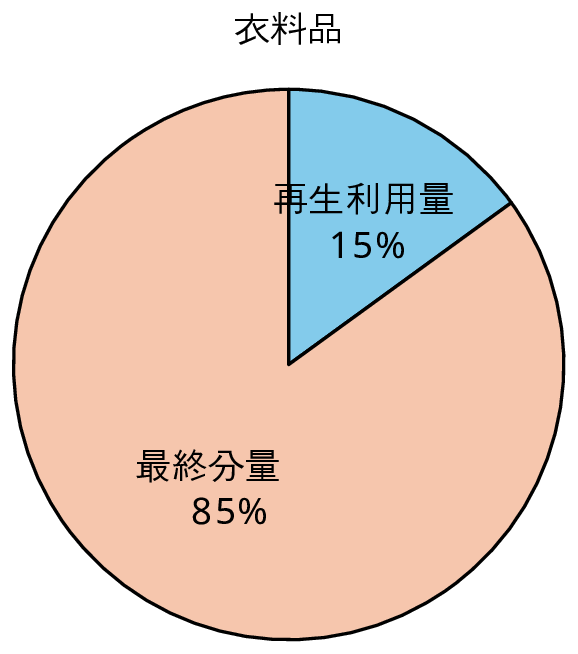
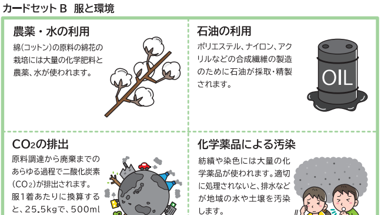

第3部：きらびやかな世界の裏側（アパレルファッションの問題）
残念ながら、アパレルファッション産業は、大量生産・大量消費・大量廃棄のビジネスモデルが広がったこともあり、環境負荷が極めて大きい産業と言われています。また、途上国の工場での低賃金・長時間労働や児童労働の問題なども発覚し、問題提起されています。
この環境破壊や労働問題について調査し、問題への理解を深めましょう。
●どのような問題が起きているのか？
○ワーク（調べ学習）アパレルファッションの問題を調査する！
アパレルファッションが環境や人権等に与える問題について調べてまとめましょう。
リサイクル率や廃棄量などを他の事例と比較して示すことで、問題の大きさが分かりやすくなります。データを用いたまとめを心掛けましょう（例を参照してください）。
なお、全体のまとめでは、調査で見つかった問題を羅列するのではなく、種類毎に分類すると理解しやすくなります。
例 リサイクル率の比較
ペットボトルの2024年度のリサイクル率は、85%で非常に高いのに対し、衣料品のリサイクル率は、15程度と低く、回収・再資源化の仕組みが未成熟な状態にあります。


図 リサイクルの状況
・参考サイト
ファストファッション問題とは？環境に与える影響、私たちにできること（グリーンピース）
SUSTAINABLE FASHION これからのファッションを持続可能に（環境省）
環境省 令和2年度ファッションと環境に関する調査業務（「ファッションと環境」調査結果）
リサイクル率／CO2の排出／処分焼却・埋め立て（日本）：サステナブルファッション（環境省）
お手入れ時のエネルギー利用：家庭用エネルギー（環境省地球環境局）
●問題に対する理解を深めよう！
○ワーク（グループでの話し合い）服のサプライチェーンと問題がどのように関係しているのか？
次に、消費者庁の教材（20枚のカード）を読み上げながら服のサプライチェーンのどこに関係することか話し合い、工程の近くに置いていきましょう。1つの工程に1つが関係するとは限りません。必要に応じてカードを複製したり追加したりしてどんどん置いてみましょう。
※予め、第1部で使った10枚のカードを並べて、服のサプライチェーンをつくっておきましょう。
出典：教材「カードセットB 服と環境」、「カードセットC 服と人権・社会」（消費者庁）

○さらに深い探究（データ分析の基礎）
・二酸化炭素排出量の算出方法を調べよう！
データ分析を正しく行うためには、そもそも取り扱うデータについての意味を理解しておく必要があります。参考サイトにあるTシャツやジーンズなどの服の二酸化炭素排出量は、どのように算出されているのでしょうか？
そのために、カーボンフットプリント（CFP：Carbon Footprint of Product）について調べましょう。
・参考サイト
The Carbon Footprint of Jeans（Carbonfact）
The Carbon Footprint of a T-Shirt（Carbonfact）
カーボンフットプリント全般（グリーン・バリューチェーンプラットフォーム）
・CFPの応用（データ分析の活用）
CFPの算定を行うことで、効果的な削減対策を検討できると言われています。なぜなのか、その理由について考えてみましょう。
興味を持った人は、次のワークブックに取り組んでみましょう。